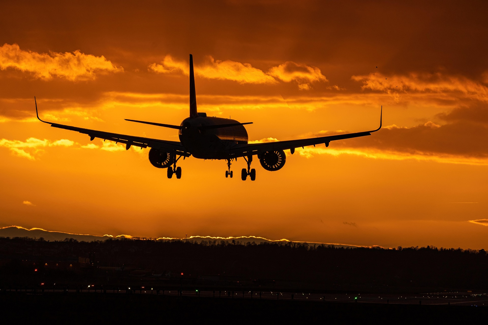
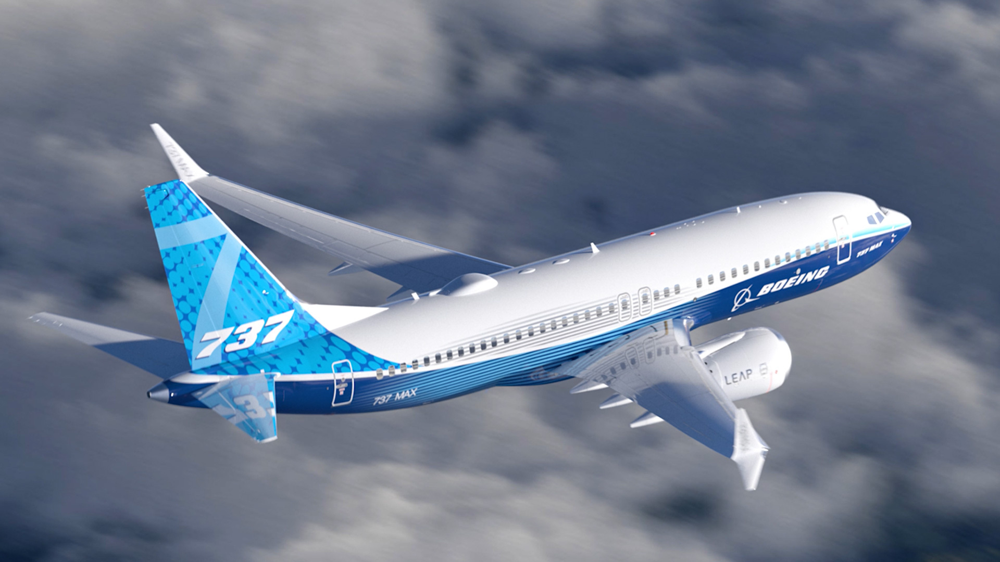
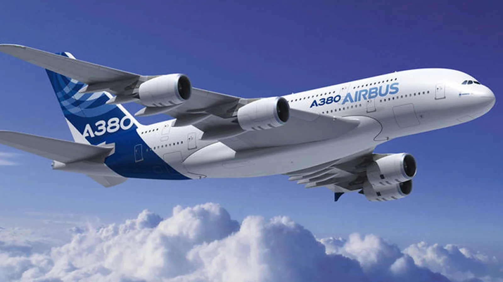
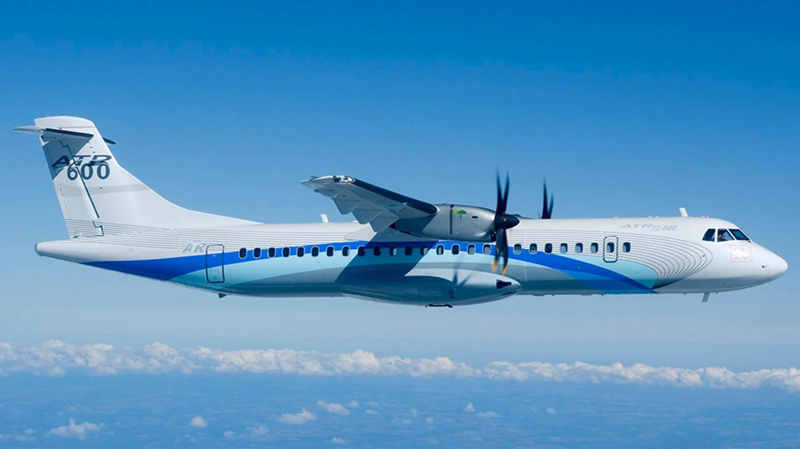
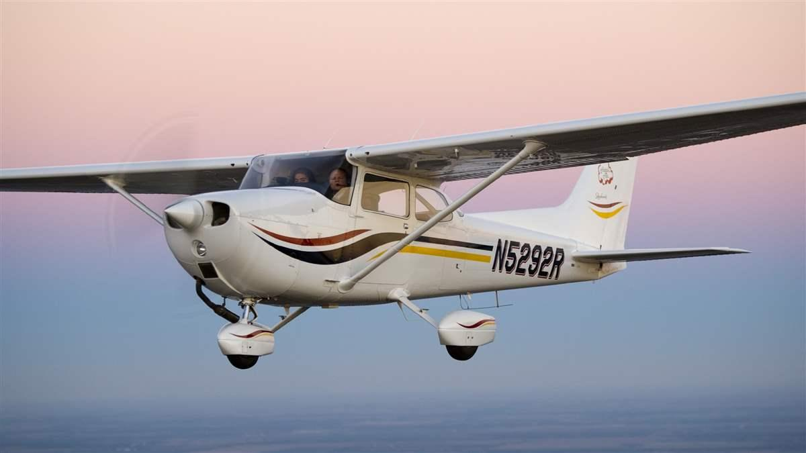
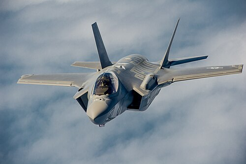
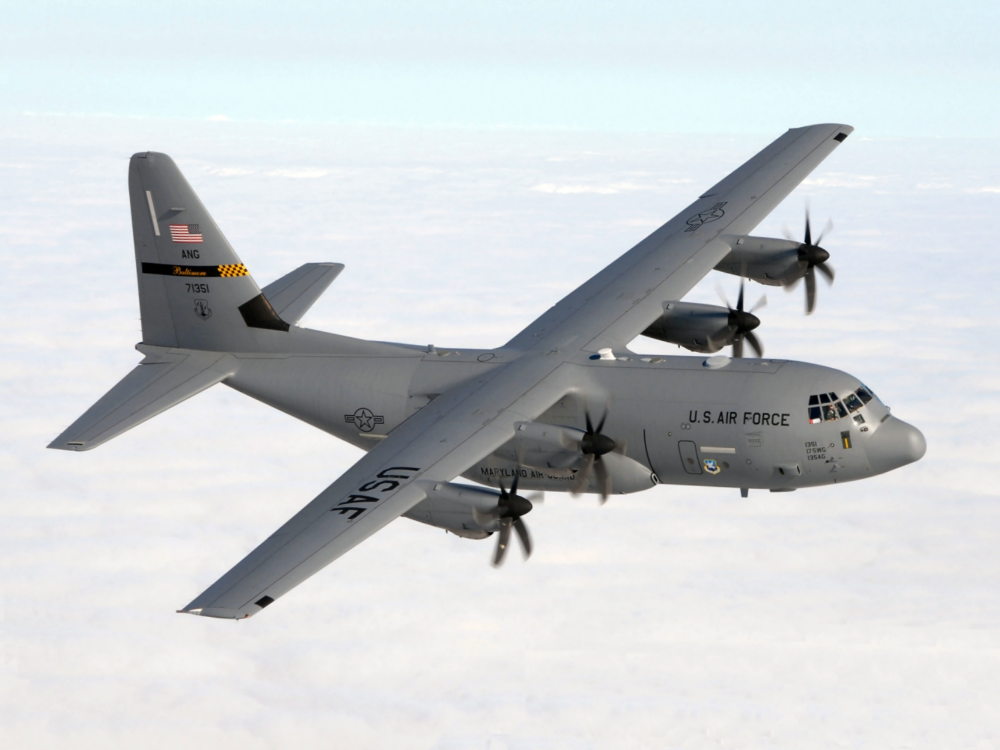

Introduzione
Questo sito ha l'obiettivo di illustrare alcuni concetti di base dell'aviazione, senza approfondirne i dettagli.
Contrariamente all'opinione comune, l'aeroplano è ad oggi il mezzo di trasporto più sicuro esistente.
Dal primo volo a motore effettuato dai fratelli Wright nel 1903, l'industria aeronautica è migliorata costantemente, soprattutto nella sua sicurezza.
Ciò è possibile soprattutto grazie alle approfondite indagini eseguite ormai da decenni a seguito di ogni singolo incidente.

Tipi di aeroplani
Gli aeroplani si possono suddividere principalmente in quattro categorie:
-
Aerei di linea
- Jet narrow-body per voli a breve e medio raggio, come il Boeing 737
- Jet wide-body per voli a lungo raggio, come l'Airbus A380
- Bimotori a elica per voli regionali, come l'ATR 72
- Aviazione generale (GA), solitamente piccoli aerei a elica, come il Cessna 172
- Cargo, ovvero aerei di linea modificati per il trasporto di merci
-
Militari
- Da caccia, come il Lockheed Martin F-35
- Da trasporto, come il Lockheed Martin C-130J






Principi di aerodinamica
Per comprendere il funzionamento di base di un aeroplano, sono necessarie alcune basi di aerodinamica.
Innanzi tutto, la pressione dell'aria è costante sul livello del mare e diminuisce all'aumentare dell'altitudine.
Per volare, un aereo deve generare una forza uguale e contraria a quella di gravità.
Tale forza è chiamata portanza ed è causata dalla differenza di pressione tra l'aria sopra e sotto le ali,
che devono avere un profilo laterale specifico perché ciò accada.
La portanza è influenzata dal quadrato della velocità, dalla pressione dell'aria, e da superficie e profilo dell'ala.
Un'altra forza molto importante è la resistenza dell'aria, che è ridotta al minimo dalla forma dell'aereo, ma sempre presente.
Essa è influenzata dalla pressione dell'aria, dalla velocità dell'aria rispetto al velivolo,
dalla superficie a contatto con il flusso, e da un coefficiente che dipende dalla forma del velivolo.

Aeroporti
Ogni aeroporto è identificato con i codici standard IATA e ICAO: il primo ha tre lettere e il secondo quattro.
Ad esempio, l'Aeroporto di Trieste è identificato sia da TRS che da LIPQ.
Un aeroporto è dotato di una o più piste, numerate con due cifre in base alla loro direzione in gradi divisa per dieci e arrotondata.
Se sono presenti più piste parallele, al numero viene aggiunto L (sinistra), C (centrale) oppure R (destra).
Dalla quarta pista parallela in poi, al numero identificativo viene semplicemente aggiunto o sottratto 1.
Ogni pista ha su di essa anche altri segni tra cui:
- La linea centrale tratteggiata
- Le linee laterali
- La soglia della pista, indicata da varie linee parallele, il cui numero è determinato dal tipo di pista
- Il punto di mira, che serve all'atterraggio
- Segni delle zone di atterraggio

Quiz
Per mettere alla prova le conoscenze di base acquisite in questa pagina, sono disponibili due quiz:
Quiz sulle definizioni e Quiz sui modelli di aerei